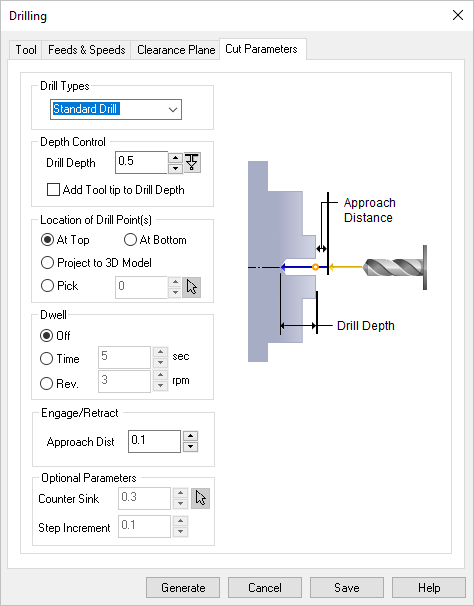
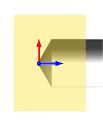
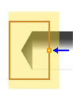
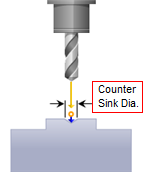

The following dialog allows you to set the Cut Parameters for Turn Drilling operations. You can set the Drill Type, Depth Control, Location, Dwell and other Optional Parameters via this dialog box.
 Dialog Box: Global Parameters tab, Turn Roughing |
Drill Types - This defines the type of drill cycle to use: Standard Drill (when depth is < than 2x dia.), Deep Drill (when depth is > 2x dia.), Breakchip Drill (with Step Increment), Countersink Drill, (with Counter Sink Dia.) or User Defined Drill1-4 (see Cycles section of the Post Process Generator). |
Depth refers to the actual hole depth you wish to achieve. Add Tool Tip to Drill Depth - Check this box to compute the height of the drill tool taper and add it to the total Drill Depth.
|
Select this option if drilling should start at your Work Zero. The Drill Depth is then subtracted to this location. An actual point is not required. The location is determined automatically by your Work Zero location.  At Top Select this option if drilling should end at your Work Zero. The Drill Depth is then added to this location. An actual point is not required. The location is determined automatically by your Work Zero location.  At Bottom Project to 3D Model Select this option if you want to project the start point to your 3D model. For example, if your stock is longer than your part but you want the Drill Depth to begin at the face of your part instead of the face of the stock. An actual point is not required. The location is determined automatically by your part model.  Project to 3D Model
 Pick Top |
Dwell is an optional parameter that allows a machine delay of either Time (sec) Rev (rpm) of the spindle. |
You can define the Approach Distance under Engage/Retract. The tool rapids in the Z axis to the approach plane and then applies the specified feedrate from the approach plane to the specified depth to perform the cycle. |
The following additional parameters are supported: Under Optional Parameters, Counter Sink Dia. is only required for the Counter Sink Drill Type operation. The system will automatically calculate the drill depth to achieve the required Counter Sink Diameter. Optionally, you can use the pick button to select a circle to define the diameter of the Counter Sink.  Countersink Diameter Step Increment - If Drill Type is set to either Deep Drill or Breakchip Drill, enter the Step Increment in the field provided. The tool will retract after each step increment completely to clean out the chips. |